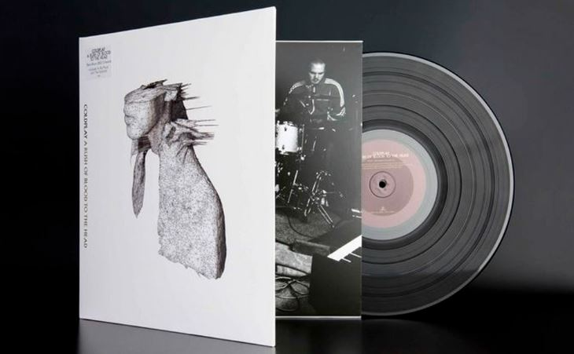

A Rush of Blood To The Head: El segundo Álbum de Coldplay
El material discográfico de los británicos llegó tras un mediano éxito obtenido con "Parachutes". De hecho, la crítica internacional califica al primer disco como uno más bien "tibio", debido a que se anotaron tan solo un hit en las listas musicales internacionales, "Yellow".
Ante esto, la tarea era compleja para la agrupación liderada por Chris Martin. Levantar un segundo disco que los posicionara en la escena musical internacional, era una ardua labor. Sobre todo pensando que los londinenses querían impregnar un sello "sensible" a sus creaciones.
Sin embargo, lograron lo impensado para muchos y se posicionaron a nivel internacional. El mismo disco es considerado como uno de los más importantes en la dentro de la primera mitad de la década de los 2000's y uno destacado dentro del britpop contemporáneo.
Las emociones a las que nos transporta
El disco -que comenzó a ser grabado tras el atentado a las Torres Gemelas, el 11 de septiembre del 2001- comienza con la canción "Politik". Que nos transporta inmediatamente a paisajes mágicos, y ojo, esto no lo dice Rock & Pop, sino que gran parte de la crítica internacional.
Pero para ser justos, no es hasta "In My Place" que todo comienza y entrega la esencia real que quería demostrar Coldplay con el disco. El sencillo líder del álbum, se lanzó un par de semanas antes y se logró posicionar en los rankings mundiales de inmediato. Incluso llegó al número 17 del listado de Billboard, algo impensado para una agrupación con tan pocos años de carrera.
Después de esto vino "The Scientist". Que destaca por su icónico video, en el que un piano se roba la película. Se podría decir que es una de las canciones más melancólicas de la pieza musical, en donde el dolor de una ruptura, se siente en la voz de Martin. De hecho, hasta el día de hoy es un infaltable en los listados recopilatorios del grupo.
"Clocks" es otra de las canciones imperdibles de este disco. Es la que te transporta desde pasajes melancólicos, incluso tristes, hacia un estado de alegría y energía.
¿Qué hay de la portada?
"A Rush of Blood to the Head" también impactó por su portada, la cual fue una creación del fotógrafo noruego Sølve Sundsbø quien contó en un par de entrevistas, que tenía sentimientos encontrados sobre la imagen. Sin embargo, después de esto se llevó una grata sorpresa.

"Estaba aterrorizado. Pensé que era hermoso, pero estaba seguro de que nunca lo publicarían", dijo. A pesar de esto, a Chris Martin le encantó y quedó como la definitiva del disco.
Premios
A pesar de haber tenido una labor compleja, los británicos sacaron adelante la tarea con creces. Esto, porque se adjudicaron importantes premios internacionales. Por ejemplo, obtuvieron el Grammy a "Mejor disco de música alternativa"; un Brit Award por "Mejor álbum británico" y fueron además, ocho veces disco de platino.
Fuente: Rock & Pop